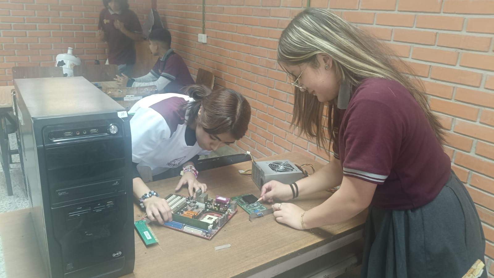
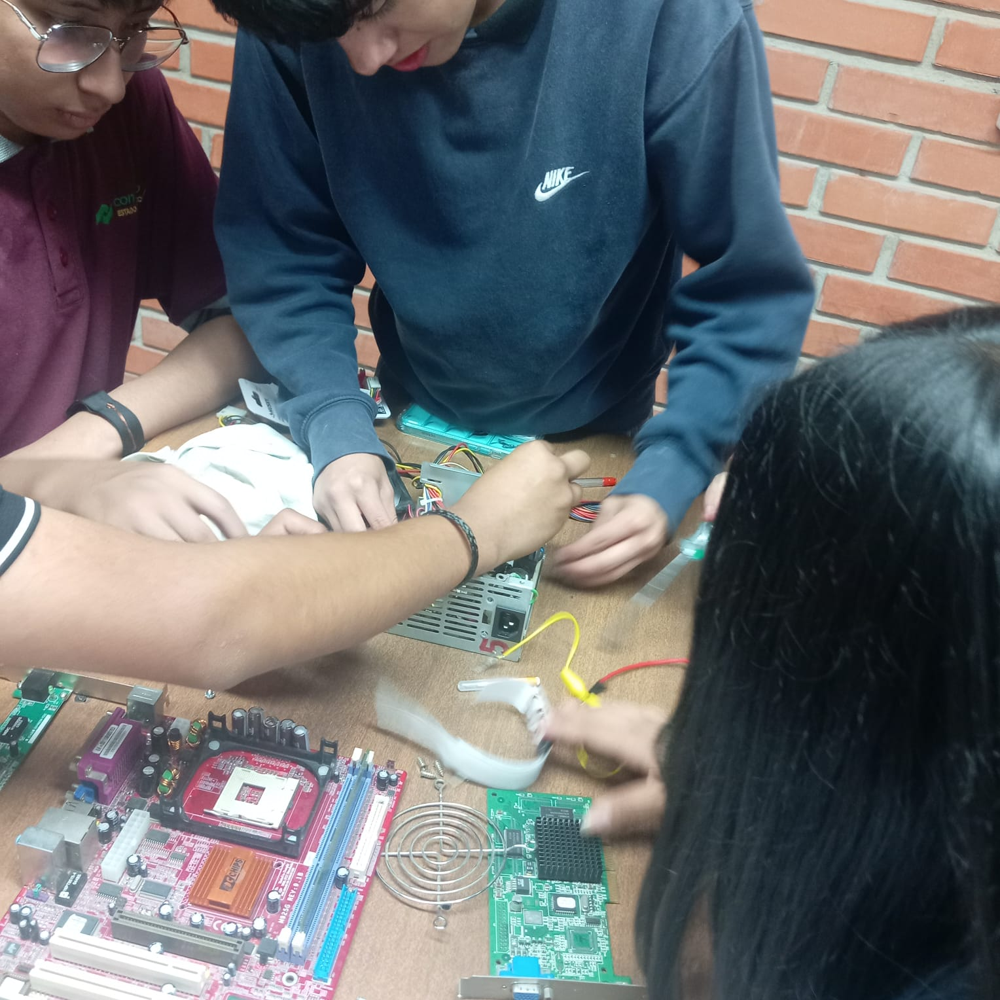

El mantenimiento de equipo de cómputo comprende un conjunto de procedimientos destinados a conservar, optimizar y prolongar la vida útil.
El mantenimiento de equipo de cómputo consiste en realizar acciones destinadas a conservar el buen estado de los componentes físicos y lógicos de una computadora. Estas actividades permiten prevenir fallas, mejorar el rendimiento del sistema y garantizar que el equipo opere de manera eficiente durante más tiempo.

Realizar mantenimiento de forma periódica ayuda a detectar problemas antes de que se conviertan en fallas graves. Además, permite mejorar la velocidad del equipo, proteger la información almacenada y reducir costos asociados a reparaciones o reemplazos de componentes.
Más InformaciónUn equipo correctamente mantenido ofrece mayor estabilidad, mejor rendimiento, mayor seguridad frente a amenazas informáticas y una vida útil más prolongada. Asimismo, contribuye a una mejor experiencia de trabajo, estudio o entretenimiento.

Garantizar que las computadoras y laptops funcionen de manera eficiente, segura y confiable mediante procedimientos de limpieza, revisión, optimización y cuidado de sus componentes internos y externos.